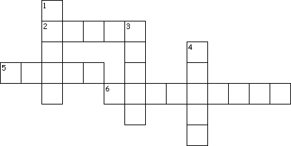
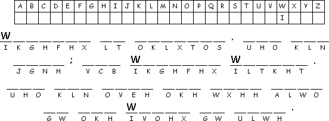

This Week: Acts 16:16-34, Psalm 97, Revelation 22:12-14, 16-17, 20-21, John 17:20-26
Middle-School Pew-work
|
In what ways is the Church like a Bride for Christ? How could we be more like Christ's Bride? __________________________________________________________________________ |
|
|
________________________________________ |
 Across 2.First letter of the Greek alphabet 5.Last letter of the Greek alphabet 6.A statement of the Truth Down 1.The answer to thirst 3.Messenger from God 4.The Church Created by Puzzlemaker at DiscoverySchool.com |

Next week: Acts 2:1-21 or Genesis 11:1-9, Psalm 104:24-34, 35b, Romans 8:14-17 or Acts 2:1-21, John 14:8-17, (25-27)